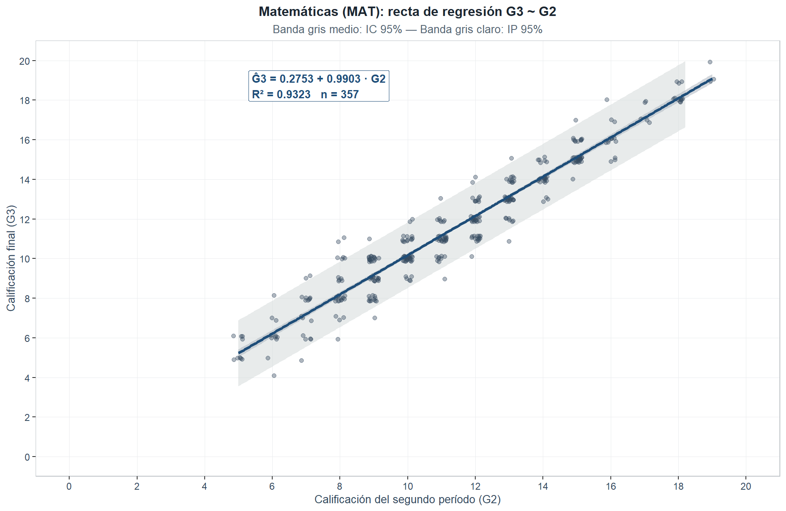

2 Modelo de regresión lineal simple — Matemáticas (MAT)
2.1 Especificación y estimación del modelo
Modelo: \(G3_i = \beta_0 + \beta_1 G2_i + \varepsilon_i\), con \(\varepsilon_i \overset{iid}{\sim} \mathcal{N}(0, \sigma^2)\), \(i = 1, \ldots, 357\). Estimadores MCO (equivalentes a MV bajo normalidad; Montgomery y Runger, 2021, Cap. 11): \(\hat\beta_1 = S_{xy}/S_{xx}\), \(\hat\beta_0 = \overline{G3} - \hat\beta_1\overline{G2}\), \(\hat\sigma^2 = SSE/(n-2)\). Los supuestos se verifican en §4.
2.2 Estimación de parámetros
| Parámetro | Estimación | Error estándar | Estadístico t | p-valor | Decisión (\(\alpha = 0.05\)) |
|---|---|---|---|---|---|
| \(\hat{\beta}_0\) (Intercepto) | 0.2753 | 0.1669 | 1.6498 | 0.0999 | No rechaza \(H_0\) |
| \(\hat{\beta}_1\) (G2) | 0.9903 | 0.0142 | 69.9469 | < 0.001 | Rechaza \(H_0\) |
Tabla 2.1: modelo estimado \(\widehat{G3} = 0.2753 + 0.9903 \cdot G2\). La pendiente \(\hat\beta_1 = 0.9903\) indica que un incremento unitario en G2 se asocia a un aumento esperado de 0.9903 puntos en G3. El intercepto \(\hat\beta_0\) carece de sentido sustantivo (\(G2 = 0\) cae fuera del rango observado \([5, 19]\) y coincide con los registros administrativos excluidos) y no es significativo al 5 % (p = 0.0999). El error residual \(\hat\sigma = 0.8407\) es la desviación típica estimada del error poblacional \(\varepsilon\); bajo normalidad de \(\varepsilon\), ≈ 68 % y 95 % de los errores poblacionales caerían en \(\pm\hat\sigma\) y \(\pm 2\hat\sigma\) respectivamente —no exactamente los residuales observados \(e_i\), cuya varianza es \(\sigma^2(1 - h_{ii})\) y son insesgados pero no idénticamente distribuidos (Kutner et al., 2005, §3.2)—.
2.3 Prueba de hipótesis global — ANOVA y prueba F
Descomposición de la variabilidad total: \(SST = SSR + SSE\) (\(3709.0476 = 3458.1291 + 250.9185\)). Hipótesis \(H_0: \beta_1 = 0\) vs. \(H_1: \beta_1 \neq 0\); estadístico \(F_0 = MSR/MSE \sim F_{1,n-2}\) bajo \(H_0\).
| Fuente de variación | Suma de cuadrados (SC) | Grados de libertad (gl) | Cuadrado medio (CM) | Estadístico F | p-valor |
|---|---|---|---|---|---|
| Regresión (G2) | 3458.1291 | 1 | 3458.1291 | 4892.568 | < 0.001 |
| Error residual | 250.9185 | 355 | 0.7068 | NA | NA |
| Total | 3709.0476 | 356 | NA | NA | NA |
Tabla 2.2: \(F_0 = 4892.5684\) con 1 y 355 gl, p < 0.001. Se rechaza \(H_0: \beta_1 = 0\) al nivel \(\alpha = 0.05\): G2 es predictor lineal significativo de G3. El resultado es concordante con la prueba \(t\) sobre \(\hat{\beta}_1\) (\(t_0 = 69.9469\)), verificándose \(F_0 = t_0^2\) (Montgomery y Runger, 2021, Ec. 11-21).
2.4 Coeficiente de determinación
| Métrica | Valor | Interpretación |
|---|---|---|
| \(R^2\) | 0.9323 | 93.23% de la variabilidad de G3 es explicada por G2 |
| \(R^2\) ajustado | 0.9322 | Ajustado por grados de libertad |
| \(\hat{\sigma}\) (Error estándar residual) | 0.8407 | Desviación típica de los residuales (en puntos de calificación) |
| \(n\) (observaciones) | 357.0000 | Observaciones con G3 > 0 |
Tabla 2.3: \(R^2 = 0.9323\) — el 93.23 % de la variabilidad de G3 queda explicada por G2 (\(R^2 = r^2\) con \(r = 0.9656\)); el \(R^2\) ajustado (0.9322) coincide prácticamente con el no ajustado.
2.5 Intervalos de confianza para los parámetros
IC al 95%: \(\hat\beta_j \pm t_{\alpha/2,n-2} \cdot SE(\hat\beta_j)\), con \(t_{0.025,355} = 1.9667\) (Casella y Berger, 2002, §11.3).
| Parámetro | Estimación | LC inferior (2.5%) | LC superior (97.5%) | Interpretación |
|---|---|---|---|---|
| \(\beta_0\) (Intercepto) | 0.2753 | -0.0529 | 0.6034 | Rango plausible del intercepto poblacional |
| \(\beta_1\) (G2) | 0.9903 | 0.9625 | 1.0182 | Incremento medio de G3 por cada punto adicional en G2 |
Tabla 2.4: IC 95% para \(\beta_1 = [0.9625, 1.0182]\) no contiene cero → se rechaza \(H_0: \beta_1 = 0\).
2.6 Intervalos de confianza y predicción para G3
Para un valor \(x_0\) se construyen dos intervalos (Montgomery y Runger, 2021, Ec. 11-35/11-36): el IC para la media \(E(G3 \mid G2 = x_0)\) usa factor \(\sqrt{1/n + (x_0-\overline{G2})^2/S_{xx}}\); el IP para una observación individual usa \(\sqrt{1 + 1/n + (x_0-\overline{G2})^2/S_{xx}}\). El IP es más amplio al incorporar la variabilidad individual \(\hat\sigma^2\). El IC sirve para decisiones grupales; el IP, para pronósticos individuales.
| G2 (x₀) | Ĝ3 (predicción) | IC inf. (95%) | IC sup. (95%) | IP inf. (95%) | IP sup. (95%) |
|---|---|---|---|---|---|
| 4 | 4.237 | 4.014 | 4.459 | 2.568 | 5.905 |
| 6 | 6.217 | 6.044 | 6.390 | 4.555 | 7.880 |
| 8 | 8.198 | 8.070 | 8.326 | 6.539 | 9.856 |
| 10 | 10.178 | 10.083 | 10.274 | 8.522 | 11.835 |
| 12 | 12.159 | 12.070 | 12.248 | 10.503 | 13.815 |
| 14 | 14.140 | 14.025 | 14.254 | 12.482 | 15.797 |
| 16 | 16.120 | 15.964 | 16.276 | 14.460 | 17.781 |
| 18 | 18.101 | 17.896 | 18.306 | 16.435 | 19.767 |
| 20 | 20.082 | 19.826 | 20.338 | 18.408 | 21.755 |
| * S_xx = 3526.1064; media de G2 = 11.3585; t_{0.025, 355} = 1.9667. |

Figure 2.1: Modelo G3 ~ G2 en Matemáticas (MAT): recta de regresión ajustada (línea azul marino), banda del intervalo de confianza al 95% para la media condicional (gris medio) e intervalo de predicción al 95% para observaciones individuales (gris claro). La información del modelo se sitúa en la esquina superior izquierda para no superponerse con los datos.
Para \(G2 = 12\) (próximo a la media \(\overline{G2} = 11.3585\)), la predicción es 12.159 puntos. IC 95% media: \([12.07, 12.248]\) (amplitud 0.179); IP 95% individual: \([10.503, 13.815]\) (amplitud 3.312). La diferencia de amplitud entre IP e IC recoge la variabilidad individual no capturada por G2.
Nota sobre extrapolación y frontera admisible. La tabla evalúa \(G2 \in \{4, 6, \ldots, 20\}\), pero el rango muestral es \([5, 19]\): \(G2 = 4\) y \(G2 = 20\) son extrapolaciones y deben leerse con cautela. Adicionalmente, en \(G2 = 20\) el IP al 95% excede la cota física \(G3 \leq 20\), artefacto típico de la regresión lineal sobre variables acotadas (limitación retomada en la Sección 7.1; regresión beta de Ferrari y Cribari-Neto, 2004, es una alternativa).
La Figura 2.1 confirma el buen ajuste: puntos agrupados alrededor de la recta, banda de confianza estrecha y dispersión uniforme (las agrupaciones verticales reflejan el carácter discreto de las variables). Verificación de supuestos en la Sección 4.